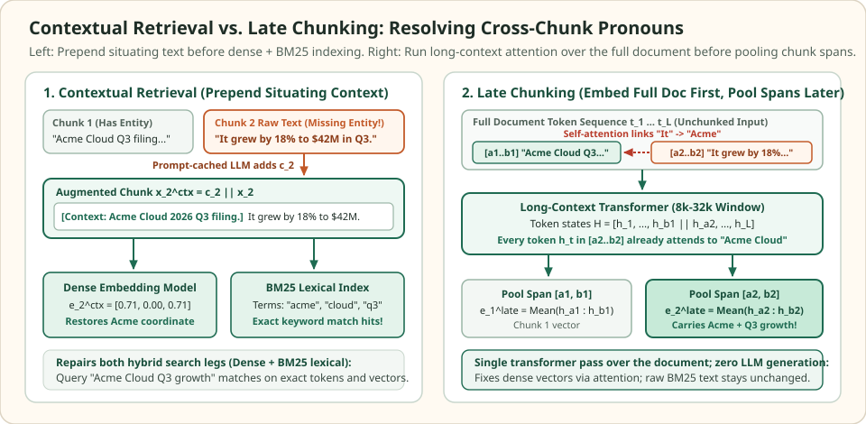

Contextual retrieval and late chunking: cure coreference and lost document context
Even when a splitter respects sentence and section boundaries, chunking a document before indexing severs long-range references. Financial filings, technical runbooks, and legal contracts name the subject entity, product version, or jurisdiction once near the top of a section and refer to it dozens of lines later using pronouns (it, they) or definite noun phrases (the service, the quarterly figure).
Two complementary architectures repair this cross-chunk context loss without inflating the retrieved passage back to the entire document: Contextual Retrieval prepends a compact situating summary to each chunk before both dense embedding and lexical indexing, whereas Late Chunking passes the full document through a long-context transformer first and pools token embeddings inside each chunk span afterward.
Why chunk-first embedding loses the subject entity
Two filings · three semantic coordinates · one severed pronoun
Model the embedding space with three orthogonal coordinates $(\text{entity}=\text{Acme}, \;\text{entity}=\text{Beta}, \;\text{metric}=\text{Q3 revenue})$. Query $q = (0.8, 0.0, 0.6)$ asks for Acme Cloud Q3 revenue growth. In Acme's filing, Chunk $A_1$ introduces Acme Cloud while Chunk $A_2$ reports "It grew by 18% to \$42M in Q3."


When chunks are embedded in isolation (early chunking), the encoder sees Chunk $A_2$ without its antecedent and assigns zero weight to the $\text{Acme}$ coordinate: $e^{\text{early}}(A_2) = (0.0, 0.0, 1.0)$. Meanwhile, a competitor passage $B_1$ that mentions Acme in passing while reporting Beta Corp's Q3 numbers receives a higher dot product with $q$ than $A_2$ does.
Unit query q = (0.8000, 0.0000, 0.6000) in (Acme, Beta, Q3 revenue) space. Early chunking ranks the answer chunk A2 last.
| Chunk and text | Unit vector (Acme, Beta, Q3) | Dot product with q | BM25 match on "Acme"? | Contains answer "$42M / 18%"? |
|---|---|---|---|---|
| A1 (Early): "Acme Cloud 2026 corporate overview." | (1.0000, 0.0000, 0.0000) | 0.8000 | Yes | No (header only) |
| B1 (Early): "Beta Corp Q3 revenue was flat vs Acme." | (0.4149, 0.6638, 0.6223) | 0.7053 | Yes | No (wrong company) |
| A2 (Early): "It grew by 18% to $42M in Q3." | (0.0000, 0.0000, 1.0000) | 0.6000 | No | Yes (missed at top-2!) |
| A2 (Contextual prefix c2 || x2) | (0.7071, 0.0000, 0.7071) | 0.9899 | Yes | Yes (Rank 1) |
| A2 (Late chunking over full doc) | (0.6247, 0.0000, 0.7809) | 0.9683 | No (raw text unchanged) | Yes (Rank 1) |
Scroll horizontally to compare the columns. Keyboard: focus the table, then use the left and right arrow keys.
Both remedies lift $A_2$ from last place ($0.6000$) to first place ($>0.96$) by restoring the missing $\text{Acme}$ component before the final chunk vector is indexed.
Contextual Retrieval: explicit prefix augmentation
Given document $D$ and its $N$ chunks $x_1, \dots, x_N$, Anthropic's Contextual Retrieval prompts an instruction model with $(D, x_k)$ to produce a short situating prefix $c_k$ ($30\text{--}80$ tokens) naming the document's primary entity, time period, and section scope, then concatenates it to the chunk:
Because $c_k$ is plain text prepended before indexing, it simultaneously fixes Contextual Embeddings and Contextual BM25. In production hybrid retrieval pipelines (dense cosine + BM25 fused via Reciprocal Rank Fusion), exact lexical matches on SKU codes, error strings, tenant names, and fiscal quarters often carry half the retrieval weight; only explicit text augmentation adds those missing tokens to the inverted posting lists of Chunk $A_2$.
Naively passing $(D, x_k)$ to an LLM for each of the $N$ chunks would process $O(N \cdot |D|)$ input tokens per document. With prefix prompt caching, the full document $D$ is placed in the static system prefix once and cached in KV memory, reducing the marginal input cost of chunk $k$ to $|x_k|$ input tokens plus $|c_k|$ generated output tokens:
Late Chunking: transformer attention before span pooling
Standard ("early") chunking splits the token sequence $T = (t_1, \dots, t_L)$ into disjoint slices $t_{a_k:b_k}$ first and runs the embedding transformer independently on each slice:
Late Chunking (Günther et al., 2024) reverses the order of operations. It feeds the entire document token sequence $t_{1:L}$ through a long-context embedding transformer ($8{,}192$ to $32{,}768$ tokens) in a single forward pass to obtain contextualized token representations $H = (h_1, \dots, h_L) = \operatorname{Transformer}(t_{1:L})$, and only then applies mean pooling within each chunk's token span $[a_k, b_k]$:
Because self-attention inside the transformer links $t_{\text{"It"}}$ in span $[a_2, b_2]$ directly to $t_{\text{"Acme Cloud"}}$ in span $[a_1, b_1]$, the token vector $h_{\text{"It"}}$ absorbs the antecedent's entity features prior to pooling—requiring zero LLM token generation at ingest time.
Comparing trade-offs and runnable verification
Choosing between Contextual Retrieval and Late Chunking comes down to whether your pipeline relies on lexical BM25 matching, whether documents fit inside a single long-context embedding window, and how much ingest budget you have.
| Dimension | Contextual Retrieval ($c_k \Vert x_k$) | Late Chunking ($\operatorname{Pool}(H_{a_k:b_k})$) |
|---|---|---|
| Lexical / BM25 repair | Yes — explicit entity and scope terms are indexed into BM25 posting lists | No — only dense token states change; raw chunk text stays unmodified |
| Ingest compute cost | $N$ LLM generation calls per document (mitigated by prompt caching) + $N$ short embedding passes | One long-context embedding forward pass over $L$ tokens; zero LLM generation |
| Encoder requirement | Works with any dense embedding model and any external vector/BM25 engine | Requires a mean-pooled long-context encoder exposing token-level hidden states $H \in \mathbb{R}^{L \times d}$ |
| Document length ceiling | Up to the LLM prompt cache window ($128\text{k}\text{--}1\text{M}$ tokens) | Bounded by the embedding model's context window ($8\text{k}\text{--}32\text{k}$ tokens; longer docs need windowed overlap) |
import numpy as np
# 3D basis: [entity=Acme, entity=Beta, metric=Q3_revenue]
q = np.array([0.8, 0.0, 0.6]) # unit query for "Acme Cloud Q3 revenue growth"
def unit(v):
v = np.asarray(v, dtype=float)
return v / np.linalg.norm(v)
# Token-level uncontextualized embeddings inside Document A:
# Span A1 (tokens 0..1): ["Acme_Cloud", "overview"]
# Span A2 (tokens 2..3): ["It", "grew_18pct_Q3"]
doc_a_tokens = np.array([
[1.0, 0.0, 0.0], # t0: "Acme_Cloud"
[1.0, 0.0, 0.0], # t1: "overview"
[0.0, 0.0, 0.0], # t2: "It" (unresolved pronoun in isolation)
[0.0, 0.0, 1.0], # t3: "grew_18pct_Q3"
])
# 1. Early Chunking: slice spans first, pool without cross-span attention
e_a1_early = unit(doc_a_tokens[0:2].mean(axis=0))
e_a2_early = unit(doc_a_tokens[2:4].mean(axis=0))
e_b1_early = unit([0.5, 0.8, 0.75]) # Competitor chunk mentioning both Beta & Acme
assert round(float(q @ e_a1_early), 4) == 0.8000
assert round(float(q @ e_b1_early), 4) == 0.7053
assert round(float(q @ e_a2_early), 4) == 0.6000 # A2 ranks last!
# 2. Contextual Retrieval: prepend c2 = "[Context: Acme Cloud]" (adds [1, 0, 0])
c2_vec = np.array([[1.0, 0.0, 0.0]])
e_a2_ctx = unit(np.vstack([c2_vec, doc_a_tokens[2:4]]).mean(axis=0))
assert round(float(q @ e_a2_ctx), 4) == 0.9899
# 3. Late Chunking: full-document self-attention links t2 ("It") to t0 ("Acme_Cloud")
attn = np.array([
[1.0, 0.0, 0.0, 0.0],
[0.5, 0.5, 0.0, 0.0],
[0.8, 0.0, 0.2, 0.0], # "It" attends 0.8 to "Acme_Cloud"
[0.0, 0.0, 0.0, 1.0],
])
H_full = attn @ doc_a_tokens
e_a2_late = unit(H_full[2:4].mean(axis=0))
assert round(float(q @ e_a2_late), 4) == 0.9683
print("Early A2 score:", round(float(q @ e_a2_early), 4))
print("Contextual A2 score:", round(float(q @ e_a2_ctx), 4))
print("Late-chunked A2 score:", round(float(q @ e_a2_late), 4))Check the operating assumptions
Why doesn't Late Chunking improve BM25 keyword retrieval on pronoun-heavy chunks?
Late Chunking modifies only the dense token hidden states inside the transformer before span pooling; the raw text stored in the inverted lexical index for Chunk A2 is still "It grew by 18% to $42M in Q3," which contains zero occurrences of the token "Acme." If hybrid search relies on BM25 for exact entity or SKU matching, explicit prefix or metadata injection is still required.
Why can't you implement Late Chunking on top of an embedding model that uses only the [CLS] or last-token representation without retraining?
Late Chunking computes each chunk vector by averaging token embeddings h_t over the slice [a_k, b_k]. If the underlying encoder was trained exclusively with a single-token [CLS] or EOS contrastive loss rather than mean pooling across token states, individual slice averages do not lie in the aligned similarity space unless the model is fine-tuned for span pooling.
What happens in Contextual Retrieval if the situating prefix c_k is longer than the chunk x_k itself?
Every chunk from the same document begins to share a dominant prefix embedding, pulling all sibling chunks toward a single document centroid and washing out the specific local fact in x_k. Keeping c_k concise (roughly 30 to 80 tokens focused strictly on document entity, section scope, and timeframe) preserves within-document discrimination.
Sources
- Anthropic: Introducing Contextual Retrieval, September 2024 (Contextual Embeddings, Contextual BM25, and prompt-cached ingest).
- Günther et al.: Late Chunking: Contextual Chunk Embeddings Using Long-Context Embedding Models, arXiv:2409.04701, 2024.